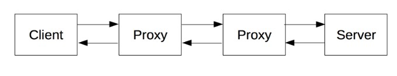

HTTP es un protocolo basado en el principio de cliente-servidor: las peticiones son enviadas por una entidad: el agente del usuario (o un proxy a petición de uno). Cada petición individual se envía a un servidor, el cuál la gestiona y responde. Entre cada petición y respuesta, hay varios intermediarios, normalmente denominados proxies, los cuales realizan distintas funciones, como: gateways o caches.
Es gracias a la arquitectura en capas de la Web, que estos intermediarios, son transparentes al navegador y al servidor, ya que HTTP se apoya en los protocolos de red y transporte. HTTP es un protocolo de aplicación, y por tanto se apoya sobre los anteriores. Aunque para diagnosticar problemas en redes de comunicación, las capas inferiores son irrelevantes para la definición del protocolo HTTP.

Cliente
El agente del usuario, es cualquier herramienta que actué en representación del usuario. Esta función es realizada en la mayor parte de los casos por un navegador Web. El navegador es siempre el que inicia una comunicación (petición), y el servidor nunca la comienza (hay algunos mecanismos que permiten esto, pero no son muy habituales).
Para mostrar una pagina web:
El navegador envía una petición de documento HTML al servidor.
Procesa este documento, y envía más peticiones para solicitar scripts, hojas de estilo (CSS), y otros datos que necesite (normalmente vídeos y/o imágenes).
El navegador, une todos estos documentos y datos, y compone el resultado final: la página Web.
El navegador, traduce esas direcciones en peticiones de HTTP, e interpretara y procesará las respuestas HTTP, para presentar al usuario la página Web que desea.
El servidor Web:
Un servidor conceptualmente es una unica entidad, aunque puede estar formado por varios elementos, que se reparten la carga de peticiones, (load balancing), u otros programas, que gestionan otros computadores (como cache, bases de datos, servidores de correo electrónico, ...), y que generan parte o todo el documento que ha sido pedido.
Un servidor no tiene que ser necesariamente un único equipo físico, aunque si que varios servidores pueden estar funcionando en un único computador. En el estándar HTTP/1.1 y Host , pueden incluso compartir la misma dirección de IP.
Proxies:
Un proxy es un equipo informático que hace de intermediario entre las conexiones de un cliente y un servidor de destino, filtrando todos los paquetes entre ambos. Siendo tú el cliente, esto quiere decir que el proxy recibe tus peticiones de acceder a una u otra página, y se encarga de transmitírselas al servidor de la web para que esta no sepa que lo estás haciendo tú.
Los proxies son utilizados muy a menudo para acceder a servicios que tienen bloqueado su contenido en determinado país. Por ejemplo, si una web no ofrece determinado contenido en tu país pero sí en otro, haciéndote pasar por un internauta de ese otro país puedes acceder a él.
Realizan varias funciones:
caching (la caché puede ser pública o privada, como la caché de un navegador)
filtrado (como un anti-virus, control parental, ...)
balanceo de carga de peticiones (para permitir a varios servidores responder a la carga total de peticiones que reciben)
autentificación (para el control al acceso de recursos y datos)
registro de eventos (para tener un histórico de los eventos que se producen)